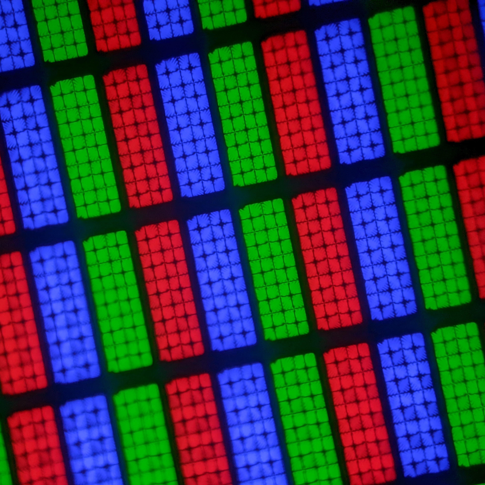

by dracento
Screensavers have been developed in the 1980s and 90s because the image could burn into the old tube monitors.
This could happen since phosphor points were used too long and too much.
When you had a screensaver on, this couldn't happen as there was motion on the screen.
The first screensaver was SRNSAVE which just turned the screen into black after 3 minutes of inactivity. That's it.
Also famous is
Other nostralgic ones were Starfield, Pipes and the 3D-text (often showing "Windows").
But some 3D screensavers did use a lot of power, so they saved your screen, but not the amount of power your PC used.
One of the most famous (and maybe most exciting) screensavers is the DVD-screensaver.
It shows the DVD-logo bouncing around the screen, changing color and direction when it hits a border.
People have been waiting for years for the logo to hit a corner, which is quite rare. It's that rare, that people even asked: "Is that possible at all?" It's almost like actual science.
And to finally answer this question: Yes, it is possible, but still unlikely. Remember that scene in The Office.
(I had to use a clipart as picture because of copyright and trademark law.)
And if you now want to wait for the corner hit yourself, but you don't have an old DVD-player, just go to bouncingdvdlogo.com or this version with a QR code (not sponsored).
As mentioned before, screensavers were developed to prevent burn-in on old tube monitors.
But today, we have LCD and OLED screens which don't have these iusses with burned-in images due to other techniques.
So screensavers aren't needed anymore to protect your screen, but they are still nostralgic and fun to watch (remember the DVD-Screensaver).
But hey, the SCRNSAVE screensaver returned, also know as sleep mode on Windows. ;)
I hope you enjoyed reading this little website about screensaver history. If yes, please follow me on GitHub.
After this page, there will only come the sources of the information and the images.
Thanks for reading.
- dracento
Image sources on the next page >
{kind=link}